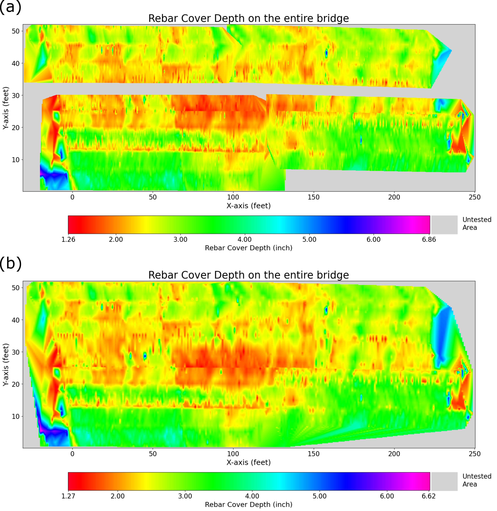
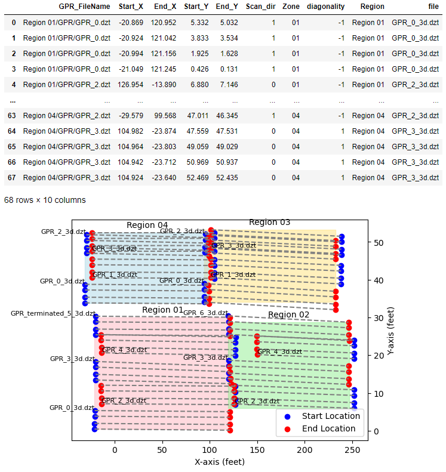

Cover Depth Measurement
Introduction to Rebar Cover Depth
In concrete bridge construction, the rebar cover depth (referred to as “concrete cover” by AASHTO) is the specified distance between the surface of the reinforcing bars and the surface of the concrete. (AASHTO, 2024b) This depth is crucial for maintaining structural integrity because it serves as a protective barrier against rebar corrosion. (AASHTO, 2024a) Additionally, it helps distribute and transfer loads, reducing the likelihood of concrete cracking or spalling. Hence, ASTM and AASHTO have established standard criteria for the minimum rebar cover depth required for various types of concrete bridges. (AASHTO, 2024b, 2024a)

Figure 1. Bridge deck sample located at Turner Fairbank Highway Research Center (TFHRC). The rebar cover depth is defined as the distance between the concrete surface and rebar surface.
Bridge structures are exposed to harsh environmental and physical conditions. The moisture with chemicals (salt or acid) can cause corrosion on rebars and damage the concrete cover. Also, the vibration, abrasion, or impact from the vehicles on the bridge affects the concrete. (Aljalawi et al., 2016) Thus, it is crucial to monitor the rebar cover depth on the concrete bridge over time in terms of structural health. The most simple and intuitive way is ‘coring’, meaning drilling cylindrical holes in the structure and measuring the cover depth from the core sample. This method directly damages the structures and leaves weak points on the spot, resulting in poor structural condition.
The alternative way is using the Non-Destructive Evaluation (NDE) technique, and the most efficient method for the rebar cover depth measurement is using Ground Penetrating Radar (GPR). It emits electromagnetic waves underground and records the reflected waves to investigate the internal structure. For detailed physical principles, readers are redirected to Physical Principle section.
Objective of the Case Study
This case study aims to provide a Python-based solution to process raw GPR data to measure the rebar cover depth on concrete bridges and output the 2D contour plots. It will give a high-level summarized report, followed by a detailed explanation about how we processed the data. Here we leverage actual GPR data from the concrete bridge located at Mississippi I-10. The NDE data is downloadable at FHWA LTBP InfoBridge™.

Prerequisites
Readers are redirected to the USING CHARISMA section to install the CHARISMA environment. Our code downloads the required GPR ZIP files directly from InfoBridge™ and automatically unzip all the ZIP files. To make our data processing transparent, we convert the data format from DZT to CSV. This part is explained in the Open Data section.
GPR Data from FHWA InfoBridge™
FHWA InfoBridge™ provides field data collections using various NDE technologies. We selected a bridge from Mississippi to illustrate the use of CHARIMSA for rebar identification (Structure number: 11000100240460B). The bridge name is I-10 over CEDAR LAKE ROAD, built-in 1970. The bridge type is a Prestressed Concrete Girder/Beam. The length of the bridge is 242.50 and the width is 59.40 ft, respectively.
{kind=link}
Figure 2. Selecting Mississippi I-10 bridge to download the NDE data from LTBP Infobridge™
In “Downloaded files - GPR” tab in InfoBridge™, there are multiple ZIP files along with one XML file. The ZIP files are the GPR scan data, and the XML file contains the actual location of GPR scanning lines with specific file names. CHARISMA reads the XML file and automatically creates a visual plot of the GPR scan area (see Figure 3). Also, it automatically creates a nested CSV directory within each Region directory, organizing all the CSV files with numbering according to the DZT file order.
{kind=link}
Figure 3. Visualized XML file downloaded from InfoBridge™.
Incorporating with all the converted CSV files, CHARISMA identifies the cartesian coordinates of rebar locations, measures the cover depth, and visualizes the result with a 2D contour figure. The entire process is automated, requiring proper input from the user. CHARISMA handles multiple CSV files within each region, breaking down the entire B-scan data into smaller segments along the x-axis survey line. Subsequently, the code automatically applies various adjustments such as time-zero correction, background removal, gain, dewow, migration, and rebar mapping to each segmented B-scan. Finally, a grid space is established covering the entire bridge to accommodate the calculated rebar locations from the four regions. We leverage the GPR location coordinates from the XML file to locate each rebar point on the bridge and interpolate among the points to create a 2D contour of the grid.
Rebar Cover Depth Results
After configuring the input variables, executing the code will produce split GPR B-scans, scatter plots, and interpolated 2D contour plots for each lane. Figure 4(a) displays the detected rebars on the split GPR B-scans. The code automatically saves the coordinates of these rebar points as a list. Following this, the code concatenates the split B-scans and generates 2D scatter plots for the entire data, and splits the concatenated B-scans again to plot the 2D scatter plots along the actual GPR scan lines (Figure 4(b)). Lastly, the saved rebar point lists and the grid space defined along the GPR scan coordinates are utilized to create 2D contour plots (Figure 4(c)).

Figure 4. CHARISMA outputs from Mississippi I-10 Region 01 rebar cover depth for the first 4 GPR scan lines. (a) The rebar mapping result (3 examples among 20 split B-scans), (b) the rebar coordinates, and (c) the interpolated 2D contour map.
Figure 5 shows the final output of processing GPR data with CHARISMA, which is the interpolated 2D contour from the entire lanes in Zone 01. We repeat this process for the other regions to gather all the rebar points on the entire bridge.
{kind=link}
Figure 5. Rebar cover depth result from Mississippi I-10 Region 01.
Once we have obtained the rebar points from all regions, CHARISMA generates the rebar cover depth contour map for the entire bridge. It combines all the rebar point lists from individual regions and establishes a grid space based on the XML file. There are two options available: one involves plotting without interpolating the gap among regions (Figure 6(a)), while the other interpolates the entire bridge based on the gathered rebar points (Figure 6(b)). Since we use the linear interpolation method, there is no available value for the edges, which is shown in grey color.
{kind=link}
Figure 6. CHARISMA output: 2D contour plot of rebar cover depth on Mississippi I-10 concrete bridge without interpolating the gap among regions (a), and with interpolating the entire bridge (b).
Discussion
We encountered some challenges in measuring the rebar cover depth: firstly, the data had some horizontal noises and rebar depth varies in a wide range. These characteristics constrained the amplification (gain) of the rebar signal, making data processing difficult. Secondly, the GPR scan distance calculated from the GPR configuration and the data frame from the XML file were mismatched, which caused significant spatial distortion on the 2D contour plot.
How do we use CHARISMA to solve the problem?
CHARISMA successfully measured the rebar cover depth on the concrete bridge at Mississippi I-10. Our approach begins by leveraging the XML file containing the actual GPR scan coordinates to correlate with the GPR data. Then, we process GPR data based on the raw data analysis, pinpoint rebar coordinates with the K-means clustering algorithm, and concatenate all the rebar points from different regions with the offset correction. Finally, we interpolate the points to populate the grid space, ensuring it matches the dimensions of the bridge. All the details are organized in Code Explanation section.
What limitations have been reminded of?
The limitation of our work lies in two aspects: one is from the F-K migration, and the other is from the K-means clustering algorithm. The migration requires the dielectric to be constant for all media, which yields inconsistent migration among all the B-scans. We also observed severe parabola superpositions on some B-scan areas, showing some weird migrated points. These anomalies hinder the algorithm from finding the actual rebar locations.
Also, the K-means clustering method has limitations in locating all the rebars correctly. It struggles to detect certain weakened rebar signals and occasionally misinterprets secondary positive diffracted signals or noise with positive amplitude as rebars. While these errors are mitigated to some extent by employing interpolation for all rebar points, they nonetheless impact the results and call for improved constraints or methodologies.
Comprehensively, this approach still requires manual raw data analysis and setting appropriate parameters for code input, indicating that the code is not fully automated to get the result. Our focus currently lies on utilizing machine learning tools to locate rebars without relying on migration or the K-means clustering algorithm, aiming for complete automation of rebar cover depth measurement.
Jupyter Notebook – Mississippi Bridge
We provide our Jupyter notebook to show how the code is utilized to get the results. Clicking the image below will redirect you to our notebook on CHARISMA’s GitHub page.
Code Explanation
LTBP Infobridge™
After selecting the bridge from LTBP Infobridge™ and clicking the LTBP section, the NDE data and related information are available in four sections: Reports, Photos, Download Files, and Graphs.
In the Reports tab, three PDF reports are available: the deck coring report, the RABIT™ report, and the visual observation report. The deck coring report shows the dimensions of core samples to validate the NDE technique. Robotic Assisted Bridge Inspection Tool (RABIT™) (https://highways.dot.gov/research/long-term-infrastructure-performance/ltbp/rabit%E2%84%A2-bridge-deck-assessment-tool) report shows various NDE results such as GPR, impact echo, ultrasonic surface waveform, and electrical resistivity. The visual observation report states descriptions of the general bridge status from what inspectors can observe. The bridge deck, joints, drainage, and bearing are inspected with conditions subjectively categorized as good or bad. They also provide photos from the visual inspection in the Photos tab.
In the Download Files tab, various types of NDE data collected from RABIT™ are available. In the GPR section, there are multiple ZIP files along with one XML file. The XML file, short for Extensible Markup Language, is a plain text file format used for storing and exchanging structured data in a hierarchical format. It is a widely adopted standard for representing and organizing data in a format that is readable by both humans and machines. This file contains not only the bridge name, data collection timestamp, investigator details, and weather conditions but also provides the actual cartesian coordinates of GPR scanning lines with specific file names. This allows us to correlate each GPR file with its corresponding bridge location.
The ZIP files contain actual GPR data in DZT format. Each ZIP file corresponds to a specific ‘Zone’, which represents a division of the entire bridge. For instance, Zone 01 denotes the area spanning from 0 to 120 feet in the x-direction and 0 to 50 feet in the y-direction, while Zone 2 covers the range from 120 to 240 feet in the x-direction and 0 to 50 feet in the y-direction. Within each zip file, there are GPR analysis results such as corrosion amplitude map, rebar cover depth map, and depth-corrected amplitude map. This analysis was carried out by engineers at FHWA using GSSI RADAN software. The interactive analysis results are also available at the Graphs tab, the users can get the numbers directly if they put their mouse cursor on the graph.
{kind=link}
Figure 7. LTBP InfoBridge™ website for NDE section. Reports, Photos, Download Files, and Graphs are available to public.
Read XML File and Data Format Conversion
CHARISMA outputs rebar cover depth contour plots based on the XML file and ZIP files from the LTBP InfoBridge™. CHARISMA reads the XML file and automatically creates the data frame and visual plots of the GPR scan area. This data frame is used to generate the rebar cover depth contour map. The first step is specifying the directory path of the XML file, and using XMLReader class in CHARISMA:
home_dir = 'C:/download/path/data/'
xml_file = home_dir + '28-000002_2019-05-21_GPR.xml'
xml_reader = XMLReader(xml_file)
df_coord = xml_reader.df_coord
Figure 8 displays the outputs generated by the code, showing the data frame df_coord and GPR scan plot. The Mississippi I-10 bridge has a total of 68 GPR scans, with each line containing X and Y coordinates denoting the starting and ending points. In the data frame, the scan_dir column indicates the scan direction: a value of 1 signifies a forward scan (where Start_X is smaller than End_X), while a value of 0 indicates a backward scan. The diagonality column represents the slope of the GPR scan line, with a value of 1 indicating a positive slope (where Start_Y is smaller than End_Y), and -1 indicating a negative slope. These columns will be used as a variable to process the GPR data.
The GPR scan plot visualizes the data frame, showing how the GPR data are collected. In this bridge, the entire area is divided into four regions, each containing multiple GPR scan lines. It is worth noting that the starting and ending points of these scan lines alternate to ensure efficient data collection. Additionally, each DZT file corresponds to four GPR lines, and a group of DZT files collectively form a region.
{kind=link}
Figure 8. Output results from CHARISMA XMLReader. Note that the GPR scan line at Region 03 and 04 have overlapping lines.
To clarify terminology and prevent confusion, here we define some words. Each DZT file comprises four GPR scan lines, which we designate collectively as a ‘lane’. These lanes are then grouped to create a ‘zone’, corresponding to the Region shown in Figure 8. Therefore, four GPR lines constitute a lane, and multiple lanes form a zone. The relationships among terminologies are visually illustrated in Figure 9.
Next, we move on to converting the data format from DZT to CSV. Using the DztToCsvConverter class in CHARISMA, each DZT file referenced in the df_coord will be transformed into data.csv and config.csv files. Specifically, the data.csv file contains the GPR data, while the config.csv file stores the GPR configuration settings for each lane (four lines). Our code automatically creates a nested CSV directory within each zone directory, organizing all the CSV files with numbering according to the lane order (see Figure 9).
{kind=link}
Figure 9. The relationships among lines, lanes, and zones to represent the entire GPR scans on the bridge. CHARISMA converts DZT format into CSV, with each CSV file numbered to correspond to the equivalent DZT file shown in the left figure. It is important to note that each DZT file represents one lane, and the same applies to the CSV file.
Rebar Cover Depth Measurement
We defined a Python class, name with RebarCoverDepth, which requires several inputs to measure rebar cover depth. Here we explain all the inputs in detail. After this, we will show how we determine these parameters for our case study.
df_coord: The df_coord we defined from the XML file.
zone_number: The zone number. This Python class operates for one zone, meaning that users need to use the code four times if there are four zones on the bridge. If you want to process GPR Zone 01, input 1.
chunk_size: It represents the size used to partition B-scans from a single CSV file. This variable is determined based on the characteristics of the GPR lane data. For instance, in this case study, the GPR data spans 13000 to 14000 points along the x-axis. Therefore, a value of 670 is chosen to divide the data length into approximately 20 segments, facilitating the creation of 20 or 21 split B-scans.
gpr_lanes: The number of lanes in the zone. For example, according to Figure 3, zone 01 has 5 lanes.
home_dir: The directory path where holds all the ‘GPR Zone’ directories.
window: The parameter used for the horizontal background removal. It uses SciPy uniform_filter1d (URL: https://docs.scipy.org/doc/scipy/reference/generated/scipy.ndimage.uniform_filter1d.html). It utilizes the moving average method along the data, and if there is some continuous horizontal signal along the data within the defined size of the window, it cancels out the horizontal signal. If the value is too small, the important signal can be removed. On the other hand, if the value is too large, the horizontal signal can be recognized as a signal and basically outputs as is.
alpha: The exponent used in a gain function. In this case study, we used the exponential gain method. For detailed information, please visit our Rebar Mapping case study. We recommend the value between 0 (no gain) and 0.2 to slightly amplify the signal part.
t0, tmax: The time range to apply gain. The initial and maximum time should be determined based on the raw A-scan data (note that the time here means the GPR column index).
rhf_espr: The dielectric constant, this parameter is important since we leverage the F-K migration method. The migration result can significantly change if the user chooses an improper dielectric (may have a parabola with too high dielectric, or inverted parabola with too low dielectric value). We recommend users run the code several times with different dielectrics ranging from 5 to 8 and go with the parameter that returns the best migration result.
vmin, vmax: The parameter used in visualizing B-scans. These two parameters control the B-scan amplitude contrast ranges. For example, if vmin is 0.15, the amplitude (in A-scans) value below 15% is expressed as all black. In the same way, if vmax is 0.70, the amplitude above 70% is shown as white. We recommend users to use the default values: 0.15 and 0.7.
num_clusters: The maximum number of rebar locations in the split B-scan. We use the K-means clustering algorithm for the rebar mapping, and our method requires this parameter to pinpoint the centroid of each cluster. For a detailed explanation, readers are redirected to the following URL: (https://scikit-learn.org/stable/modules/generated/sklearn.cluster.KMeans.html). We recommend counting the number of rebars in one of the split B-scans and multiplying 2 to make sure the algorithm can locate rebars properly. For example, if the number of rebars in the split GPR B-scan is 50, input 100 as num_clusters.
amplitude_threshold: The threshold value to detect rebar locations. If the signal amplitude in B-scans is below this threshold parameter, the code does not recognize the cluster as rebar. For example, you set this parameter as 0.50, and if there are some attenuated points on the migrated B-scans below 50% of the maximum amplitude, then the algorithm will pass the point and not consider it as rebar. If the threshold is too low, then most of the diffracted signals below adjacent parabolas are also recognized as rebars and result in poor output. If the threshold is too high, the code fails to capture most of the rebars and fails to achieve the objective.
depth_threshold: The maximum depth of the bridge in inches. The signal below this value will not be counted as rebar. For example, if you know the ground truth of the bridge depth, use that value as the parameter.
minimal_y_index: The initial y-axis index of the B-scan to skip the 1st positive peak from the rebar counting. We recommend using the value between 10 and 20 (The number is data index, not inch or feet).
redundancy_filter: Since we use the K-means clustering algorithm and use sufficient numbers for the num_clusters, there should be some redundant rebar points. This parameter determines the criterion for removing centroid points that are too close along the x-axis. For instance, if the value is 2, we remove adjacent points if the distance between them is less than 2 units along the survey line, measured in data dimensions rather than physical units like inches or feet.
scaling_factor: Used for better contrast for B-scans. We recommend using between 0.2 to 0.5.
We will discuss our criteria for determining each variable and parameter for utilizing our RebarCoverDepth Python class. Here we will show only Lane 01 of Zone 01 and process the other zones with the same criteria. The initial step is inputting the correct values for zone_number, gpr_lanes, and home_dir based on Figure 3. The chunk_size is determined based on the GPR data length, which is printed at the beginning of the code:
The data length is 13436 which is 537.30 (feet)
Since each DZT file has four consecutive GPR scan lines, the data length is approximately four times longer than the bridge. We process the GPR data with segmented B-scans, and we recommend having around 20 partitions so that the chunk_size is 670.
zone_number = 1,
chunk_size = 670,
gpr_lanes = 5,
home_dir = 'C:/User/Download/Mississipi_bridge/'
The next step involves inspecting the split B-scan images, depicted in Figure 10. Horizontal signals are detected around y-coordinate 100. Also, alternating rebars are located along y-coordinate 200 within the interval (0, 400) of the x-axis. However, a sudden presence of rebar signals is situated around y-coordinate 100 beyond x-coordinate 400. This characteristic of data poses a significant challenge to analysis, as the locations of rebars exhibit a wide variability. To elaborate, if we enhance the signal amplitude using the gain function for all rebars, we must encompass a y-axis range of (80, 230). Since the range is too wide, some unnecessary responses can be amplified (i.e., horizontal noises and 2nd rebar signal diffractions), complicating the algorithm’s ability to precisely identify rebars. Thus, we opt not to employ gain and accept the loss of some weaker rebar responses, while also eliminating the horizontal signals. Nevertheless, the algorithm is still capable of determining the rebar cover depth, even in instances where some rebars are absent, by estimating the positions of missing rebars through linear interpolation.
{kind=link}
Figure 10. The segmented GPR B-scan on Mississippi I-10 concrete bridge.
Based on the analysis of the raw B-scan, we use horizontal background removal and do not use the gain function. Also, the dielectric constant is determined based on the migrated results, and 8 returned the best result. For the contrast variables vmin & vmax, we recommend using the default values. Hence, the parameters are selected as follows:
window = 10,
alpha = 0,
t0 = 0,
tmax = 0,
rhf_espr = 8,
vmin = 0.15,
vmax = 0.70
The next step involves determining the parameters for identifying rebars. This requires users to estimate the number of rebars in the split B-scan. Users should select a B-scan segment, which has dense rebar regions from the entire B-scan and count the white spots (Refer to Figure 11). In this case, the rebar count was 50, leading us to set the num_clusters to 50*2=100. Since we did not utilize the gain function, the amplitude_threshold was set at 0.52, indicating that positive signals above 52% of the maximum amplitude are considered rebars. Additionally, knowing the bridge depth is 8 inches, we set the depth_threshold to 8. To exclude initial positive peaks, we set the minimal_y_index to 20. Finally, to eliminate overlapping rebar locations within 1.5 inches, we applied a redundancy_filter of 1.5 and utilized the default setting scaling_factor of 0.25.
num_clusters = 100,
amplitude_threshold = 0.51,
depth_threshold = 8,
minimal_y_index = 20,
redundancy_filter = 2,
scaling_factor = 0.27
{kind=link}
Figure 11. Migrated result of split B-scan. This sample has dense rebars compared to others, so it is used as a criterion sample for deciding the num_clusters.
Automatic Offset Correction
It is important to mention that we can measure the GPR survey line distance using scans-per-meter from the GPR configuration. However, this measured distance often does not align with the distances provided in the XML file. In Figure 8, we observe that all four GPR scan lines in a lane display very similar distances, with only a 1- or 2-feet difference among lines. However, upon splitting the consecutive GPR data into four lines based on the XML coordinates, we noticed significant discrepancies in lengths among these lines, totaling approximately 20 feet. This issue will result in significant spatial distortion on the rebar cover depth contour. To resolve this issue, we hypothesized that the measured GPR scan coordinate includes an offset value, resulting in an underestimation of the survey line distance for all four lines by a consistent amount. Our code addresses this issue by iterating through a range of offset values and adjusting the length of the four lines accordingly. We then select the offset value that equalizes the distances among the four lines. Figure 12 illustrates a comparison of the results with and without the offset correction.
In certain cases, the field distance measurement differs significantly from the GPR data, our automatic offset correction does not work. This discrepancy was particularly evident in lane 3 of Zone 02. In Figure 8, the third lane from the bottom in Zone 2 appears notably shorter than the other lanes. Upon dividing the consecutive B-scans into four lines based on the XML file, Figure 13(b) shows that the fourth line deviates significantly from the others, even though offset correction has been applied. This indicates the distances provided by the XML file are inaccurate. Our code identifies this issue and produces the following diagnostic message.
Wrong GPR distance measurement detected (x-axis). Define the x-axis in the df_coord for this lane.
To address the issue, we replaced the Start_X and End_X data of lane 3 with those of lane 1 in Zone 02 while retaining the Y information. The following code snippet demonstrates the location replacement for lane 3 of Zone 02 in the df_coord. Figure 13(a) illustrates that the problem has been resolved with the x-coordinate replacement and the offset correction.
df_coord.loc[28:31, 'Start_X'] = df_coord.loc[20:23, 'Start_X'].values
df_coord.loc[28:31, 'End_X'] = df_coord.loc[20:23, 'End_X'].values
{kind=link}
Figure 12. GPR lane split into four lines with (a) and without (b) offset correction at lane 01 of Zone 01. Figure 12(a) shows all four lines corrected with the offset value from our code. In Figure 12(b), the distance of line 4 is considerably shorter than other lines.
{kind=link}
Figure 13. In Lane 03 of Zone 02, GPR lane split into four lines with replaced x-axis coordinate with the Lane 01 (a), and only based on the XML coordinates without correction (b). Figure 13(a) shows similar distance among all lines. On the other hand, Line 4 in Figure 13(b) shows a significant length difference due to the severe underestimation of distance in the XML file.